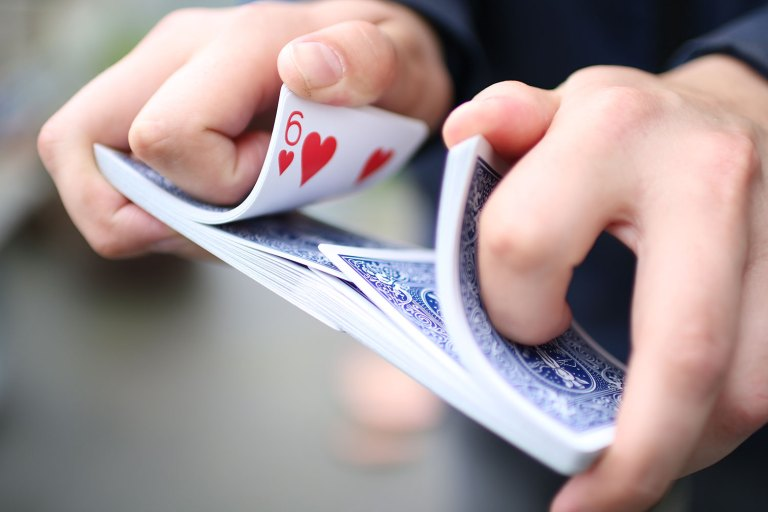
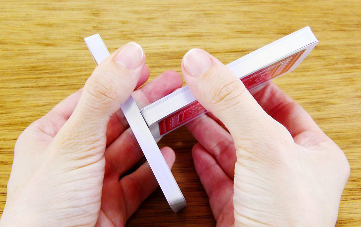

위 이미지는 덱을 두 뭉치로 나눠(컷) 리플셔플을 하는 것이며 오른쪽 이미지는 또한 컷을 사용해 두 뭉치로 나눈 것이다. 이 외에도 다양한 용어들이 있다고 한다. 카드 용어, 기술 분류하기 애매한 몇몇 것은 아래 기술에 분류 되있다.
Terms of Card
카드 마술의 대부분은 영어권 나라에서 생겼기 때문에 용어와 기술이름은 대부분 영어를 기반으로 되있다. 그 때문에 영어의 뜻을 알면 대부분 어떤 기술, 용어인지 유추할 수 있다.
매니플레이션: 손기술 및 손기술을 사용한 마술을 통칭함
프로덕션: 손기술을 의미, 매니플레이션과 통용되서 쓰임
루틴: 마술 여러가지를 연이어 하면서 하나의 큰 마술을 하는것
베니싱: (카드가) 사라지는 것/ 어피어링: (카드가) 나타나는 것
카드 컨트롤: 선택한 카드를 마술사 자신이 원하는 위치에 옮기는 것
미스 디렉션: 트릭을 감추기 위해 시선을 다른 곳으로 옮기는 것
컷: 카드를 몇몇 뭉치로 나누는 것, 나누어 섞는 것을 부를때도 쓰임
그립: 카드를 잡는 법으로 메카닉스 그립과 비들 그립 등이 있다.
